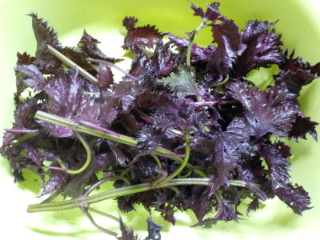
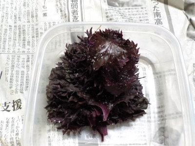
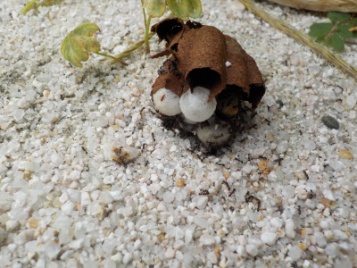
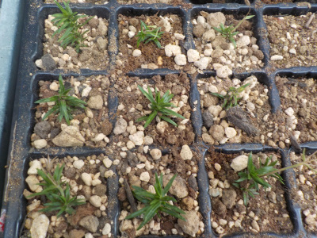

遊びで植物を育てよう
2023/06/24
赤紫蘇の塩漬けを作りました。

夕方の暗いなかで赤紫蘇を収穫したので、半分くらい虫食いがあって使えませんでした。

丁寧に洗って、1枚置いて塩ふって、また1枚置いて塩ふってを繰り返しました。
初めて作ったんですが、美味しいといいな。
以前大葉の醤油漬けを作った事があるんですが、いい食べ方がわからず食べれなかった記憶があります。今回はどうかな。
【6月TOP】
【日記TOP】
【園芸TOP】
2023/06/24
コガタスズメバチの巣が出来てたので落としました。

家にツボをひっくり返したような形のハチの巣が出来ていたので落としました。
コガタスズメバチって名前の蜂らしい。
【6月TOP】
【日記TOP】
【園芸TOP】
2023/06/24
芝桜ってどこに置くといいんでしょう。

庭の片隅で、枯れそうで枯れずにずーっと芝桜がいます。
ちょっと環境のいい場所に置いたら増えてキレイだろうと思って挿し芽で増やすんですが、置き場がないです。
【6月TOP】
【日記TOP】
【園芸TOP】
2023/06/22
キキョウが咲いてました。

どこからか種が飛んできたのかな。
【6月TOP】
【日記TOP】
【園芸TOP】
過去の日記
【2024年6月の日記】
【2023年6月の日記】
【2022年6月の日記】
【2021年6月の日記】
【2020年6月の日記】
【2019年6月の日記】
【2018年6月の日記】
【2017年6月の日記】
【2016年6月の日記】
【2015年6月の日記】
【2014年6月の日記】
【2013年6月の日記】
【2012年6月の日記】
【6月TOP】
【日記TOP】
【園芸TOP】
梅雨の時期ですね。雑草が伸びる時期です。
【おいしいものを食べよう。】【たくさん寝よう。】
【ソロ活をしよう!】【季節感のあることをしよう。】【動画視聴はほどほどに。】【当サイトの全てのコンテンツは無断転載禁止です。】